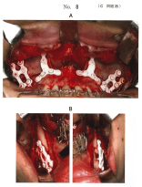
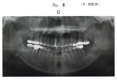

骨折部の固定や顎骨再建に使用されるプレート。チタン系が主流だが、吸収性のポリ乳酸製プレートも使用される。
| 材料 | 特徴 |
|---|---|
| 純チタン | 主流、生体適合性良好 |
| チタン合金 | 主流、強度が高い |
| ステンレス鋼 | 強度が高い |
| コバルトクロム合金 | 強度が高い |
| 材料 | 特徴 |
|---|---|
| ポリ乳酸（PLA） | 生体吸収性、二次手術不要 |
| 項目 | チタン | ポリ乳酸 |
|---|---|---|
| 吸収性 | ×（非吸収性） | ○（吸収性） |
| 強度 | 高い | やや低い |
| 二次手術 | 必要（除去） | 不要 |
| X線透過性 | 不透過 | 透過 |
| 適応 | 高強度が必要な部位 | 小児、低負荷部位 |
| 種類 | 材料 |
|---|---|
| 非吸収性 | 絹糸、ナイロン糸、ポリプロピレン糸、金属線 |
| 吸収性 | 腸線（コラーゲン）、PGA糸（ポリグリコール酸） |
骨接合用プレートに用いるのはどれか。2つ選べ。
【解説】骨接合用プレートにはチタン（金属系・非吸収性）とポリ乳酸（高分子系・吸収性）が使用される。銀合金は生体適合性が低く不適。ジルコニアは脆性があり不適。TCPは骨補填材であり、プレートには使用しない。
る手術中の口腔内写真（別冊 No.8A、B）と手術翌日のエックス線画像（別冊 No.8C）を別に示す。
骨固定に用いた材料の主成分はどれか。1つ選べ。


【解説】写真では白色の吸収性プレートが使用されている。X線画像でプレートが写っていない（X線透過性）ことから、ポリ-L-乳酸製プレートと判断できる。チタン製プレートはX線不透過で画像に写る。